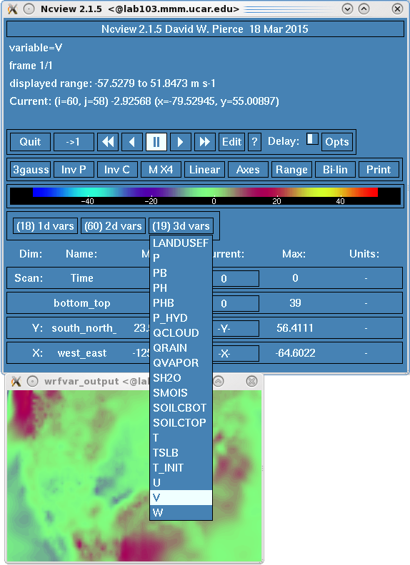
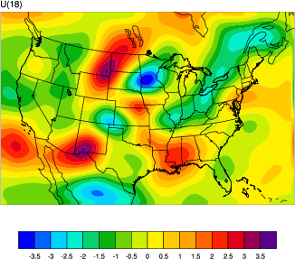
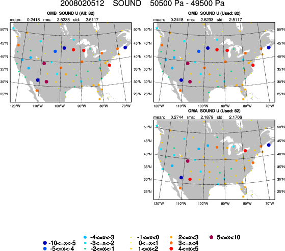

Running WRFDA-3DVAR - real data case
The goal of this session is to generate an updated WRF analysis and boundary conditions using WRFDA 3DVAR data assimilation.
Reference: Download the tutorial presentation
Source code
Get the pre-compiled code, if you have not yet done so.
WRFDA/var/build/da_wrfvar.exe and WRFDA/var/build/da_update_bc.exe are the executables that will be used in this session.
Create your working directory
You should create /kumquat/users/${USER}/DA/3dvar and use this as your working directory for this lesson.
mkdir /kumquat/users/${USER}/DA/3dvar
cd /kumquat/users/${USER}/DA/3dvar
Input data
This case utilizes a continental USA domain, 90x60 gridpoints, 41 vertical levels, and 60km resolution (it can be found at /kumquat/wrfhelp/DATA/WRFDA/CONUS60). The exact area of the domain is shown at right. A number of the exercises in this tutorial (OBSPROC, 3DVAR real and PSOT, GENBE) will use this case.
It features a storm system which produced a deadly tornado outbreak across the Central/Southern USA on February 5, 2008.
A very basic namelist file for running the tutorial case is available at /kumquat/wrfhelp/DATA/WRFDA/CONUS60/namelist.input.3dvar
|
 |
cp /kumquat/wrfhelp/DATA/WRFDA/CONUS60/namelist.input.3dvar ./namelist.input
A land-use table is needed as well (provided in the WRFDA package)
ln -fs /kumquat/users/${USER}/DA/WRFDA/run/LANDUSE.TBL ./LANDUSE.TBL
Besides namelist.input and LANDUSE.TBL, the other three major input files to WRFDA-3DVAR are observations (ob.ascii), background error statistics (be.dat), and first guess (fg).
- ob.ascii is in plain-text format and is the output from OBSPROC that you created in the previous lesson.
ln -fs /kumquat/users/${USER}/DA/obsproc/obs_gts_2008-02-05_12:00:00.3DVAR ./ob.ascii
- be.dat is in binary format and contains background error information. For this lesson, just use the supplied pre-generated be.dat (you will learn to create your own in a later exercise)
ln -fs /kumquat/wrfhelp/DATA/WRFDA/CONUS60/be/be.dat ./be.dat
- fg is the first guess (background) in netCDF format and can be either a "wrfinput" file from WPS/real.exe or a "wrfout" file from a WRF forecast.
cp -p /kumquat/wrfhelp/DATA/WRFDA/CONUS60/rc/2008020512/wrfinput_d01 ./fg
Edit namelist.input
You should edit namelist.input to ensure the following namelist variables are consistent with the time and domain of your analysis target. For the tutorial case, you shouldn't have to change any values, but it is always good practice to make sure.
> vi namelist.input
&wrfvar18
analysis_date="2008-02-05_12:00:00",
/
...
&wrfvar21
time_window_min="2008-02-05_11:00:00",
/
&wrfvar22
time_window_max="2008-02-05_13:00:00",
/
...
&domains
e_we=90,
e_sn=60,
e_vert=41,
dx=60000,
dy=60000,
/
Note that many sections of the namelist (&wrfvar1, &wrfvar2, etc.) are blank, with no entries. They are not just there for show: most of these will be used in future exercises.
Run WRFDA-3DVAR (da_wrfvar.exe)
For convenience, link the main WRFDA executable (da_wrfvar.exe) to your current working directory. Then run the executable
ln -sf /kumquat/users/${USER}/DA/WRFDA/var/build/da_wrfvar.exe ./da_wrfvar.exe
mpirun -np 6 ./da_wrfvar.exe
Running this case should take less than a minute on the classroom computers.
Check output
When WRFDA is completed, you should see a number of files in your working directory. Use the ls command to view them:
lab105.mmm.ucar.edu:/kumquat/users/class105/DA/3dvar>ls
be.dat gts_omb_oma_01.0000 namelist.input rej_obs_conv_01.0004 rsl.out.0000 unpert_obs.0000
buddy_check gts_omb_oma_01.0001 namelist.output.da rej_obs_conv_01.0005 rsl.out.0001 unpert_obs.0001
check_max_iv gts_omb_oma_01.0002 ob.ascii rsl.error.0000 rsl.out.0002 unpert_obs.0002
cost_fn gts_omb_oma_01.0003 qcstat_conv_01 rsl.error.0001 rsl.out.0003 unpert_obs.0003
da_wrfvar.exe gts_omb_oma_01.0004 rej_obs_conv_01.0000 rsl.error.0002 rsl.out.0004 unpert_obs.0004
fg gts_omb_oma_01.0005 rej_obs_conv_01.0001 rsl.error.0003 rsl.out.0005 unpert_obs.0005
grad_fn jo rej_obs_conv_01.0002 rsl.error.0004 statistics wrfvar_output
gts_omb_oma_01 LANDUSE.TBL rej_obs_conv_01.0003 rsl.error.0005 unpert_obs
The most important of these output files is wrfvar_output: this is the analysis file generated by WRFDA. It is in WRF netCDF format. You can view it with the ncview command.
ncview wrfvar_output
An example display of the ncview application can be seen at right. Use the dropdown menus to select different variables. You can also look at different vertical levels by clicking the box to the right of the label "bottom_top"
Since you ran in parallel with mpirun, you should have a number of files that begin with "rsl.out" and "rsl.error". These are the log files for regular output and error messages, respectively, and there should be one of each for the number of processors you ran WRFDA on. For example, rsl.out.0000 is the output from the first processor, rsl.out.0001 is the output from the second processor, etc. If your run was successful, your rsl.out.0000 (log file) should end with *** WRF-Var completed successfully ***. You can see an example rsl.out.0000 file here.
statistics is another diagnostic file that should be checked after each WRFDA run to make sure that the task was done correctly and successfully. It contains information about OI (the observation minus background, OMB) and AO (the observation minus analysis, OMA) for each observation type, in addition to statistics on the increment for each of the modified state variables (u, v, T, P, and q).
gts_omb_oma_01 contains information about observations and innovation, qcstat_conv_01 (contains information about quality control), and rej_obs_conv_01.#### (lists all conventional observations that were rejected by each processor) are other useful diagnostic files.
|
 |
There are several tools available for viewing the analysis increments. A netCDF file containing the analysis increment fields can be created with either ncdiff or ncbo.
ncdiff fg wrfvar_output increment.nc
or
ncbo -y sbt fg wrfvar_output increment.nc
The resulting increment file can be quickly viewed using ncview:
ncview increment.nc
You should see differences in the fields P, QVAPOR, T, U, and V.
|
To create plots rather than a raw difference file, /kumquat/wrfhelp/DATA/WRFDA/TOOLS/graphics/ncl/WRF-Var_plot.ncl and /kumquat/wrfhelp/DATA/WRFDA/TOOLS/graphics/ncl/WRF_contributed.ncl.test can be used:
cp /kumquat/wrfhelp/DATA/WRFDA/TOOLS/graphics/ncl/WRF-Var_plot.ncl .
cp /kumquat/wrfhelp/DATA/WRFDA/TOOLS/graphics/ncl/WRF_contributed.ncl.test .
Edit WRF-Var_plot.ncl to provide the filenames, level index, field name, and what plot_data to plot for your case.
vi WRF-Var_plot.ncl
......
first_guess = addfile("fg"+".nc", "r")
analysis = addfile("wrfvar_output"+".nc", "r")
......
kl = 18
var = "U"
fg = first_guess->U
an = analysis->U
plot_data = an - fg
; plot_data = an
Then run the ncl script
ncl WRF-Var_plot.ncl
display WRF-VAR_U_level_18.pdf
You should see a plot similar to the one on the right.
|
 |
/kumquat/wrfhelp/DATA/WRFDA/TOOLS/graphics/ncl/plot_gts_omb_oma.ncl can be used to plot the contents of gts_omb_oma_01.
cp /kumquat/wrfhelp/DATA/WRFDA/TOOLS/graphics/ncl/plot_gts_omb_oma.ncl .
Edit plot_gts_omb_oma.ncl to provide the date, filenames and options of your case.
......
plotdir = "ncl_plot/" ;where plot files will be created
expt = "my_plots" ; for output naming purposes, spaces are not allowed
datdir = "/kumquat/users/$USER/DA/3dvar/" ; the path of the working directory
......
fgname = "fg" ; for retrieving mapping info
......
Now run the NCL script
ncl plot_gts_omb_oma.ncl
This script may take a few minutes to complete; it will generate many plots depending on your settings. View the plots using display. An example of one of these plots, showing the OMA and OMB of sounding observations around 500 hPa, can be seen at right. Use spacebar and backspace to scroll through the different plots, showing OMB, OMA, and bias statistics for the observations at different pressure levels. There will be one output file per observation type; if you have time you can try plotting different observation types by editing the "proc_*" variables further down in the script.
|
 |
display ncl_plot/my_plots_sound_2008020512.pdf
There will be one output file per observation type: by default only SOUND and AIREP observations are plotted. If you have time you can try plotting different observation types. You can also edit the "plevs" variable to change the way observations are arranged by pressure level.
/kumquat/wrfhelp/DATA/WRFDA/TOOLS/graphics/ncl/plot_cost_grad_fn.ncl can be used to plot cost function evolution.
cp /kumquat/wrfhelp/DATA/WRFDA/TOOLS/graphics/ncl/plot_cost_grad_fn.ncl .
Edit plot_cost_grad_fn.ncl to provide the current working directory. You can also edit "domain_name" to change the plot captions.
......
dir = "/kumquat/users/$USER/DA/3dvar/"
domain_name = "my test case"
......
Run the NCL script
ncl plot_cost_grad_fn.ncl
You will notice that by default, WRFDA only prints information about the first and last iterations to cost_fn and grad_fn, so the plots will just be straight lines. If you wish to see more detailed plots, run the test case again, but with the option "calculate_cg_cost_fn = .true." under the &wrfvar11 namelist section.
Other WRF graphic tools can be used as well.
The full list of namelist options, including those not specified by the user (and so were assigned default values), can be found in the namelist.output.da file. Most of these options will not be useful for most purposes (e.g. the large list of "AUXINPUT" variables), so a more condensed list of WRFDA-related namelist options can be found at the end of the Users' Guide.
Update WRF lateral boundary conditions
After creating an analysis, we have changed the initial conditions for the model. Therefore, if we want to use the analysis to create a forecast, the tendencies in the "wrfbdy" file should be adjusted based on these new initial conditions. This is done with da_update_bc.exe
Important: Make a copy of wrfbdy_d01 from this folder, do not simply link it. The wrf_bdy_file will be overwritten by da_update_bc.exe. |
cp /kumquat/wrfhelp/DATA/WRFDA/CONUS60/rc/2008020512/wrfbdy_d01 ./wrfbdy_d01
Also, copy the sample da_update_bc namelist (parame.in) and make sure all the variables are set correctly for this experiment:
cp /kumquat/users/${USER}/DA/WRFDA/var/test/update_bc/parame.in .
vi parame.in
&control_param
da_file = './wrfvar_output'
wrf_bdy_file = './wrfbdy_d01'
wrf_input = '/kumquat/wrfhelp/DATA/WRFDA/CONUS60/rc/2008020512/wrfinput_d01'
domain_id = 1
cycling = .false.
debug = .true.
low_bdy_only = .false.
update_lsm = .false.
var4d_lbc = .false.
/
Run da_update_bc.exe
/kumquat/users/${USER}/DA/WRFDA/var/build/da_update_bc.exe
Finally, check the output. Use diffwrf (available in compiled WRFV3 code at WRFV3/external/io_netcdf/diffwrf, you can find a copy in /kumquat/wrfhelp/DATA/WRFDA/diffwrf), ncdiff, ncview, or other WRF NCL graphic tools to check what fields have been updated.
/kumquat/wrfhelp/DATA/WRFDA/diffwrf /kumquat/wrfhelp/DATA/WRFDA/CONUS60/rc/2008020512/wrfbdy_d01 wrfbdy_d01
The wrfvar_output and wrfbdy_d01 are the data-assimilated initial condition and tendency-updated boundary condition for your subsequent WRF model run. You will learn more about this in the cycling exercises later this week.
You are now finished with the basic exercise for WRFDA-3DVAR with real data. You can now try the additional practice cases below.
Additional exercises
-
Try modifying some of the namelist variables listed above (for example, setting a different analysis_date, setting a different e_we) and see what log messages you will get.
-
Try changing the time_window_min to be "2008-02-05_11:30:00" and compare the results with previous runs (Remember to check log and diagnostic files first).
- Try running WRFDA using NCEP PREPBUFR data (/kumquat/wrfhelp/DATA/WRFDA/CONUS60/ob/2008020512/gdas1.t12z.prepbufr.nr) as the observation input
ln -fs /kumquat/wrfhelp/DATA/WRFDA/CONUS60/ob/2008020512/gdas1.t12z.prepbufr.nr ob.bufr
vi namelist.input
&wrfvar3
ob_format=1
/
- Try running WRFDA with a different BE option (cv_options=3) using a pre-supplied be.dat available in the WRFDA package WRFDA/var/run/be.dat.cv3. Compare the results with previous cv_options=5 runs.
ln -fs /kumquat/users/${USER}/DA/WRFDA/var/run/be.dat.cv3 ./be.dat
vi namelist.input
&wrfvar7
cv_options = 3
/
- Try adding the following namelist settings and compare the results with previous runs (Remember to check log and diagnostic files first) .
vi namelist.input
&wrfvar5
max_error_t = 3.0
max_error_uv = 3.0
max_error_q = 3.0
max_error_p = 3.0
/
|

{kind=link}
{kind=link}
{kind=link}
{kind=link}
{kind=link}